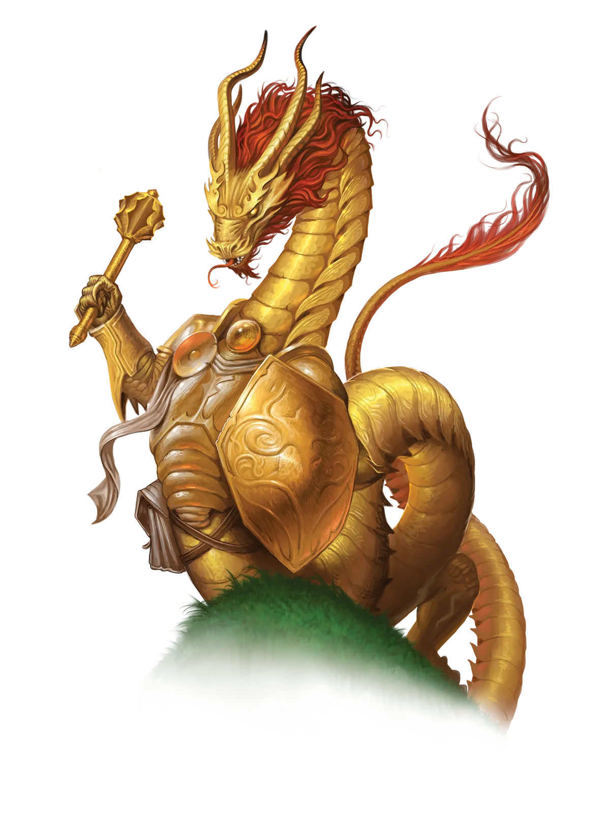
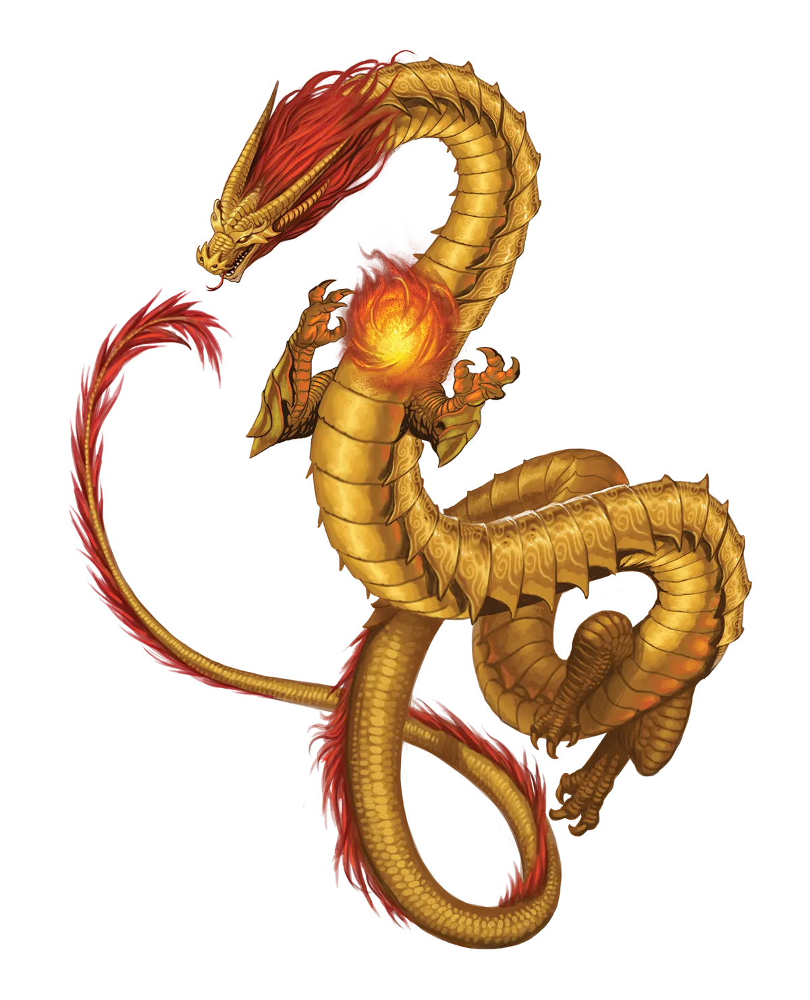

主权秘密
在所有声称自己的祖先一定是永恒之光仪式创造者的龙类中，主权龙拥有最有力的主张之一，仅仅因为那个传言――它们为了某种尚未被发现的神秘魔法而放弃了与土的联系。它们缺乏那种联系本身就是一个事实。我认为它们用土之亲和所换取的魔法很可能是完全不同的东西，但事实依旧是，那可能是永恒之光仪式。
至高龙 Sovereign Dragon |
|
|
尽管唯有纯粹的傲慢才会让红龙宣称他们的祖先创造了永恒之光仪式，但这些永恒主权龙则相信自己确实有资格提出这样的主张。首先，主权龙――即使是传统派――是唯一一类经常穿戴护甲的龙类之一，这种怪癖在仪式诞生之前几乎闻所未闻。其次，一个更为切中要害的证据表明，主权龙早已切断了自身与元素的循环联系，而这种循环既赋予其他帝国龙力量，也制约着它们。所有种族的学者们长期低声议论，称主权龙这样做是为了“获取禁忌魔法”。尽管即便是主权龙自身也无法确认真相，但这种禁忌魔法很可能包含了永恒之光仪式。如果是这样，那么主权龙牺牲了它们与土元素的联系，部分是为了让永恒之光仪式能够为所有龙类奠定根基。 许多传统主权龙认为，暗示它们用元素联系换取禁忌魔法是一种侮辱。然而，永恒主权龙言论中那种权威气息令人很容易相信它们是正确的。再加上主权龙往往热衷于错综复杂的政治博弈，于是，围绕一个可能原本只属于尘封学术论题的话题，竟然产生了令人惊讶的浓厚阴谋氛围。甚至其他龙类有时也会惊讶于主权龙为诋毁在这一问题上持不同意见者所投入的精力。 永恒主权龙非常适合冒险生活，但它们有一个怪癖，使它们在某些队伍中不可或缺，在另一些队伍中却令人烦恼。无论在何种情境下，主权龙都感到有必要扮演公正的审判者，吸收所有事实，仔细权衡，然后作出裁决，通常以慷慨激昂的演讲形式呈现。当它们扮演象征性的拥王者，打破僵局并建立共识时，它们最为快乐。而当它们真的去充当实际的拥王者时，主权龙往往会与队伍中的其他人产生分歧。主权龙无法克制地表达自己对谁应成为领袖的看法。但即便是在倾向于单一领袖的队伍中，有些人也根本不愿承担这样的角色。如果主权龙一番雄辩之后队伍仍然拒绝，龙类或许会表面上表示让步。然而，由于龙类对自己的选择深信不疑，这仅仅是一系列巧妙阴谋的开始，目的是将其选定的候选人推上应有的位置。 主权龙散发出一种威严气息，似乎要求在场者服从。然而，大多数主权龙足够明智，知道何时将这种影响力当作工具，何时将其作为武器使用。它们偏爱那些利用自己影响他人能力，并允许它们在背景与前台之间自由切换的职业。因此，它们是天生的诗人、游荡者，以及专精附魔系或幻术的施法者。更具军事倾向的主权龙则可能选择成为战士或圣武士。 主权秘密 在所有声称自己的祖先一定是永恒之光仪式创造者的龙类中，主权龙拥有最有力的主张之一，仅仅因为那个传言――它们为了某种尚未被发现的神秘魔法而放弃了与土的联系。它们缺乏那种联系本身就是一个事实。我认为它们用土之亲和所换取的魔法很可能是完全不同的东西，但事实依旧是，那可能是永恒之光仪式。 至高龙特质 Sovereign Dragon Traits 你出身于一脉精于幕后运筹、斡旋谈判与拥立君王的至高龙世系。 |
  |